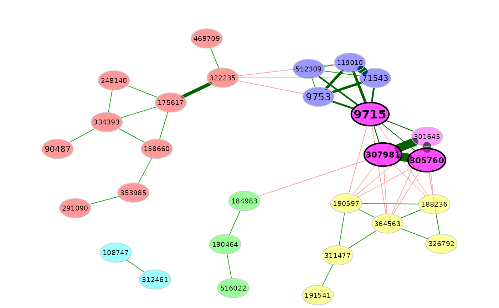
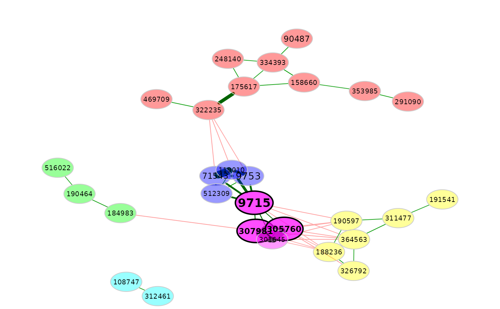

Plotting objects of class microNetProps.
Usage
# S3 method for class 'microNetProps'
plot(x,
layout = "spring",
sameLayout = FALSE,
layoutGroup = "union",
repulsion = 1,
groupNames = NULL,
groupsChanged = FALSE,
labels = NULL,
shortenLabels = "none",
labelLength = 6L,
labelPattern = c(5, "'", 3, "'", 3),
charToRm = NULL,
labelScale = TRUE,
labelFont = 1,
labelFile = NULL,
# Nodes:
nodeFilter = "none",
nodeFilterPar = NULL,
rmSingles = "none",
nodeSize = "fix",
normPar = NULL,
nodeSizeSpread = 4,
nodeColor = "cluster",
colorVec = NULL,
featVecCol = NULL,
sameFeatCol = TRUE,
sameClustCol = TRUE,
sameColThresh = 2L,
nodeShape = NULL,
featVecShape = NULL,
nodeTransp = 60,
borderWidth = 1,
borderCol = "gray80",
# Hubs:
highlightHubs = TRUE,
hubTransp = NULL,
hubLabelFont = NULL,
hubBorderWidth = NULL,
hubBorderCol = "black",
# Edges:
edgeFilter = "none",
edgeFilterPar = NULL,
edgeInvisFilter = "none",
edgeInvisPar = NULL,
edgeWidth = 1,
negDiffCol = TRUE,
posCol = NULL,
negCol = NULL,
cut = NULL,
edgeTranspLow = 0,
edgeTranspHigh = 0,
# Additional arguments:
cexNodes = 1,
cexHubs = 1.2,
cexLabels = 1,
cexHubLabels = NULL,
cexTitle = 1.2,
showTitle = NULL,
title1 = NULL,
title2 = NULL,
mar = c(1, 3, 3, 3),
doPlot = TRUE,
...)Arguments
- x
object of class
microNetProps- layout
indicates the layout used for defining node positions. Can be a character with one of the layouts provided by
qgraph:"spring"(default),"circle", or"groups". Alternatively, the layouts provided by igraph (seelayout_are accepted (must be given as character, e.g."layout_with_fr"). Can also be a matrix with row number equal to the number of nodes and two columns corresponding to the x and y coordinate.- sameLayout
logical. Indicates whether the same layout should be used for both networks. Ignored if
xcontains only one network. See argumentlayoutGroup.- layoutGroup
numeric or character. Indicates the group, where the layout is taken from if argument
sameLayoutisTRUE. The layout is computed for group 1 (and adopted for group 2) if set to "1" and it is computed for group 2 if set to "2". Can alternatively be set to "union" (default) to compute a union of both layouts, where the nodes are placed as optimal as possible equally for both networks.- repulsion
positive numeric value indicating the strength of repulsive forces in the "spring" layout. Nodes are placed closer together for smaller values and further apart for higher values. See the
repulsionargument ofqgraph.- groupNames
character vector with two entries naming the groups to which the networks belong. Defaults to the group names returned by
netConstruct: If the data set is split according to a group variable, its factor levels (in increasing order) are used. Ignored if argumentstitle1andtitle2are set or if a single network is plotted.- groupsChanged
logical. Indicates the order in which the networks are plotted. If
TRUE, the order is exchanged. See details. Defaults toFALSE.- labels
defines the node labels. Can be a named character vector, which is used for both groups (then, the adjacency matrices in
xmust contain the same variables). Can also be a list with two named vectors (names must match the row/column names of the adjacency matrices). IfFALSE, no labels are plotted. Defaults to the row/column names of the adjacency matrices.- shortenLabels
character indicating how to shorten node labels. Ignored if node labels are defined via
labels. NetCoMi's functioneditLabels()is used for label editing. Available options are:"intelligent"Elements of
charToRmare removed, labels are shortened to lengthlabelLength, and duplicates are removed usinglabelPattern."simple"Elements of
charToRmare removed and labels are shortened to lengthlabelLength."none"Default. Original dimnames of the adjacency matrices are used.
- labelLength
integer defining the length to which labels shall be shortened if
shortenLabelsis set to"simple"or"intelligent". Defaults to 6.- labelPattern
vector of three or five elements, which is used if argument
shortenLabelsis set to"intelligent". If cutting a label to lengthlabelLengthleads to duplicates, the label is shortened according tolabelPattern, where the first entry gives the length of the first part, the second entry is used a separator, and the third entry is the length of the third part. IflabelPatternhas five elements and the shortened labels are still not unique, the fourth element serves as further separator, and the fifth element gives the length of the last label part. Defaults to c(5, "'", 3, "'", 3). If the data contains, for example, three bacteria "Streptococcus1", "Streptococcus2" and "Streptomyces", they are by default shortened to "Strep'coc'1", "Strep'coc'2", and "Strep'myc".- charToRm
vector with characters to remove from node names. Ignored if labels are given via
labels.- labelScale
logical. If
TRUE, node labels are scaled according to node size- labelFont
integer defining the font of node labels. Defaults to 1.
- labelFile
optional character of the form "<file name>.txt" naming a file where the original and renamed node labels are stored. The file is stored into the current working directory.
- nodeFilter
character indicating whether and how nodes should be filtered. Possible values are:
"none"Default. All nodes are plotted.
"highestConnect"x nodes with highest connectivity (sum of edge weights) are plotted.
"highestDegree","highestBetween","highestClose","highestEigen"x nodes with highest degree/betweenness/closeness/eigenvector centrality are plotted.
"clustTaxon"Only nodes belonging the same cluster as to variables that are given as character vector via
nodeFilterPar."clustMin"Plotted are only nodes belonging to clusters with a minimum number of nodes of x.
"names"Character vector with variable names to be plotted
Necessary parameters (e.g. "x") are given via the argumentnodeFilterPar.- nodeFilterPar
parameters needed for the filtering method defined by
nodeFilter.- rmSingles
character value indicating how to handle unconnected nodes. Possible values are
"all"(all single nodes are deleted),"inboth"(only nodes that are unconnected in both networks are removed) or"none"(default; no nodes are removed). Cannot be set to"all", if the same layout is used for both networks.- nodeSize
character indicating how node sizes should be determined. Possible values are:
"fix"Default. All nodes have same size (hub size can be defined separately via
cexHubs)."degree","betweenness","closeness","eigenvector"Size scaled according to node's centrality
"counts"Size scaled according to the sum of counts (of microbes or samples, depending on what nodes express).
"normCounts"Size scaled according to the sum of normalized counts (of microbes or samples), which are exported by
netConstruct."TSS", "fractions", "CSS", "COM", "rarefy", "VST", "clr", "mclr"Size scaled according to the sum of normalized counts. Available are the same options as for
normMethodinnetConstruct. Parameters are set vianormPar.
- normPar
list with parameters passed to the function for normalization if
nodeSizeis set to a normalization method. Used analogously tonormParofnetConstruct().- nodeSizeSpread
positive numeric value indicating the spread of node sizes. The smaller the value, the more similar are the node sizes. Node sizes are calculated by: (x - min(x)) / (max(x) - min(x)) * nodeSizeSpread + cexNodes. For
nodeSizeSpread = 4(default) andcexNodes = 1, node sizes range from 1 to 5.- nodeColor
a character specifying the node colors. Possible values are
"cluster"(colors according to determined clusters),"feature"(colors according to node's features defined byfeatVecCol),"colorVec"(the vectorcolorVec). For the former two cases, the colors can be specified viacolorVec. IfcolorVecis not defined, therainbowfunction fromgrDevicespackage is used. Also accepted is a character value defining a color, which is used for all nodes. IfNULL, "grey40" is used for all nodes.- colorVec
a vector or list with two vectors used to specify node colors. Different usage depending on the "nodeColor" argument:
nodeColor = "cluster"colorVecmust be a vector. Depending on thesameClustColargument, the colors are used only in one or both networks. If the vector is not long enough, a warning is returned and colors fromrainbow()are used for the remaining clusters.nodeColor = "feature"Defines a color for each level of
featVecCol. Can be a list with two vectors used for the two networks (for a single network, only the first element is used) or a vector, which is used for both groups if two networks are plotted.nodeColor = "colorVec"colorVecdefines a color for each node implying that its names must match the node's names (which is also ensured if names match the colnames of the original count matrix). Can be a list with two vectors used for the two networks (for a single network, only the first element is used) or a vector, which is used for both groups if two networks are plotted.
- featVecCol
a vector with a feature for each node. Used for coloring nodes if
nodeColoris set to"feature". Is coerced to a factor. IfcolorVecis given, its length must be larger than or equal to the number of feature levels.- sameFeatCol
logical indicating whether the same color should be used for same features in both networks (only used if two networks are plotted,
nodeColor = "feature", and no color vector/list is given (viafeatVecCol)).- sameClustCol
if TRUE (default) and two networks are plotted, clusters having at least
sameColThreshnodes in common have the same color. Only used ifnodeColoris set to"cluster".- sameColThresh
indicates how many nodes a cluster must have in common in the two groups to have the same color. See argument
sameClustCol. Defaults to 2.- nodeShape
character vector specifying node shapes. Possible values are
"circle"(default),"square","triangle", and"diamond". IffeatVecShapeis notNULL, the length ofnodeShapemust equal the number of factor levels given byfeatVecShape. Then, each shape is assigned to one factor level (in increasing order). IffeatVecShapeisNULL, the first shape is used for all nodes. See the example.- featVecShape
a vector with a feature for each node. If not
NULL, a different node shape is used for each feature. Is coerced to factor mode. The maximum number of factor levels is 4 corresponding to the four possible shapes defined vianodeShape.- nodeTransp
an integer between 0 and 100 indicating the transparency of node colors. 0 means no transparency, 100 means full transparency. Defaults to 60.
- borderWidth
numeric specifying the width of node borders. Defaults to 1.
- borderCol
character specifying the color of node borders. Defaults to "gray80"
- highlightHubs
logical indicating if hubs should be highlighted. If
TRUE, the following features can be defined separately for hubs: transparency (byhubTransp), label font (byhubLabelFont), border width (byhubBorderWidth), and border color (byhubBorderCol).- hubTransp
numeric between 0 and 100 specifying the color transparency of hub nodes. See argument
nodeTransp. Defaults to0.5*nodeTransp. Ignored ifhighlightHubsisFALSE.- hubLabelFont
integer specifying the label font of hub nodes. Defaults to
2*labelFont. Ignored ifhighlightHubsisFALSE.- hubBorderWidth
numeric specifying the border width of hub nodes. Defaults to
2*borderWidth. Ignored ifhighlightHubsisFALSE.- hubBorderCol
character specifying the border color of hub nodes. Defaults to
"black". Ignored ifhighlightHubsisFALSE.- edgeFilter
character specifying how edges are filtered. Possible values are:
"none"Default. All edges are plotted.
"threshold"For association networks, only edges corresponding to an absolute association >= x are plotted. For dissimilarity networks, only edges corresponding to a dissimilarity <= x are plotted. The behavior is similar to that of sparsification via threshold in netConstruct().
"highestWeight"The first x edges with highest edge weight are plotted.
x is defined by
edgeFilterPar, respectively.- edgeFilterPar
numeric specifying the "x" in
edgeFilter.- edgeInvisFilter
similar to
edgeFilterbut the edges are removed only after computing the layout so that edge removal does not influence the layout. Defaults to"none".- edgeInvisPar
numeric specifying the "x" in
edgeInvisFilter.- edgeWidth
numeric specifying the edge width. See argument
"edge.width"ofqgraph.- negDiffCol
logical indicating if edges with a negative corresponding association should be colored different. If
TRUE(default), argumentposColis used for edges with positive association andnegColfor those with negative association. IfFALSEand for dissimilarity networks, onlyposColis used.- posCol
vector (character or numeric) with one or two elements specifying the color of edges with positive weight and also for edges with negative weight if
negDiffColis set toFALSE. The first element is used for edges with weight belowcutand the second for edges with weight abovecut. If a single value is given, it is used for both cases. Defaults toc("#009900", "darkgreen").- negCol
vector (character or numeric) with one or two elements specifying the color of edges with negative weight. The first element is used for edges with absolute weight below
cutand the second for edges with absolute weight abovecut. If a single value is given, it is used for both cases. Ignored ifnegDiffColisFALSE. Defaults toc("red", "#BF0000").- cut
defines the
"cut"parameter ofqgraph. Can be either a numeric value (is used for both groups if two networks are plotted) or vector of length two. The default is set analogous to that inqgraph: "0 for graphs with less then 20 nodes. For larger graphs the cut value is automatically chosen to be equal to the maximum of the 75th quantile of absolute edge strengths or the edge strength corresponding to 2n-th edge strength (n being the number of nodes.)" If two networks are plotted, the mean of the two determined cut parameters is used so that edge thicknesses are comparable.- edgeTranspLow
numeric value between 0 and 100 specifying the transparency of edges with weight below
cut. The higher this value, the higher the transparency.- edgeTranspHigh
analogous to
edgeTranspLow, but used for edges with weight ABOVEcut.- cexNodes
numeric scaling node sizes. Defaults to 1.
- cexHubs
numeric scaling hub sizes. Only used if
nodeSizeis set to"hubs".- cexLabels
numeric scaling node labels. Defaults to 1. If set to 0, no node labels are plotted.
- cexHubLabels
numeric scaling the node labels of hub nodes. Equals
cexLabelsby default. Ignored, ifhighlightHubs = FALSE.- cexTitle
numeric scaling title(s). Defaults to 1.2.
- showTitle
if
TRUE, a title is shown for each network, which is either defined viagroupNames, ortitle1andtitle2. Defaults toTRUEif two networks are plotted andFALSEfor a single network.- title1
character giving a title for the first network.
- title2
character giving a title for the second network (if existing).
- mar
a numeric vector of the form c(bottom, left, top, right) defining the plot margins. Works similar to the
marargument inpar. Defaults to c(1,3,3,3).- doPlot
logical. If
FALSE, the network plot is suppressed. Useful for saving the output (e.g., the layout) without plotting.- ...
further arguments being passed to
qgraph, which is used for network plotting.
Value
Returns (invisibly) a list with the following elements:
q1,q2 | the qgraph object(s) |
layout | layout(s) specifying node positions |
nodecolor | one or two vectors with node colors (one for each group) |
labels | one or two vectors with node labels |
Examples
# Load data sets from American Gut Project (from SpiecEasi package)
data("amgut1.filt")
# Network construction
amgut_net <- netConstruct(amgut1.filt, measure = "pearson",
filtTax = "highestVar",
filtTaxPar = list(highestVar = 50),
zeroMethod = "pseudoZO", normMethod = "clr",
sparsMethod = "threshold", thresh = 0.3)
#> Checking input arguments ...
#> Done.
#> Data filtering ...
#> 77 taxa removed.
#> 50 taxa and 289 samples remaining.
#>
#> Zero treatment:
#> Zero counts replaced by 1
#>
#> Normalization:
#> Execute clr(){SpiecEasi} ...
#> Done.
#>
#> Calculate 'pearson' associations ...
#> Done.
#>
#> Sparsify associations via 'threshold' ...
#> Done.
# Network analysis
amgut_props <- netAnalyze(amgut_net)
### Network plots ###
# Clusters are used for node coloring:
plot(amgut_props,
nodeColor = "cluster")
# Remove singletons
plot(amgut_props,
nodeColor = "cluster",
rmSingles = TRUE)

# A higher repulsion places nodes with high edge weight closer together
plot(amgut_props,
nodeColor = "cluster",
rmSingles = TRUE,
repulsion = 1.2)

# A feature vector is used for node coloring
# (this could be a vector with phylum names of the ASVs)
set.seed(123456)
featVec <- sample(1:5, nrow(amgut1.filt), replace = TRUE)
# Names must be equal to ASV names
names(featVec) <- colnames(amgut1.filt)
plot(amgut_props,
rmSingles = TRUE,
nodeColor = "feature",
featVecCol = featVec,
colorVec = heat.colors(5))
# Use a further feature vector for node shapes
shapeVec <- sample(1:3, ncol(amgut1.filt), replace = TRUE)
names(shapeVec) <- colnames(amgut1.filt)
plot(amgut_props,
rmSingles = TRUE,
nodeColor = "feature",
featVecCol = featVec,
colorVec = heat.colors(5),
nodeShape = c("circle", "square", "diamond"),
featVecShape = shapeVec,
highlightHubs = FALSE)